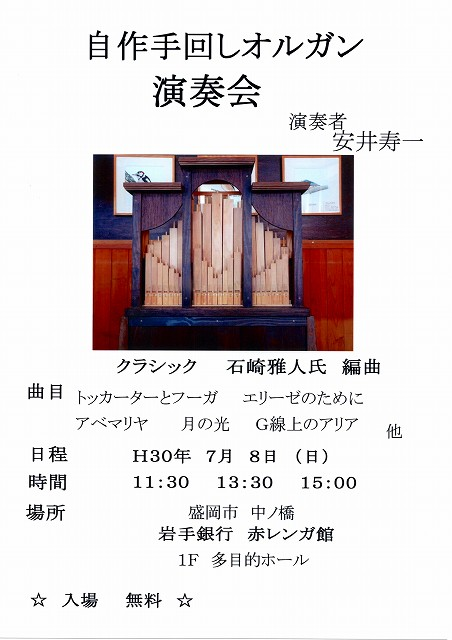

2019年演奏会
2018年7月8日に盛岡・岩手銀行赤レンガ館にて開催した演奏会のライブ録音
目次
- バッハ「シンフォニア第１番」冒頭
- ワルトトイフェル「スケーターズ・ワルツ」
- グノー「アヴェ・マリア」
- ベートーヴェン「エリーゼのために」
- バッハ「Ｇ線上のアリア」
- パッヘルベル「カノン」
- バッハ「トッカータとフーガ」
- ジェローム・カーン「煙が目に染みる」
- ペルー民謡「コンドルは飛んでゆく」
- シューベルト「楽興の時第３番」
- バッハ「主よ、人の望みの喜びよ」
- ホーギー・カーマイケル「スターダスト」

1.バッハ「シンフォニア第１番」冒頭
ヨハン・ゼバスティアン・バッハのクラヴィーアのための曲集
ケーテン時代の1723年頃の作品である。
2. ワルトトイフェル「スケーターズ・ワルツ」
『スケートをする人々』
パリの森林公園「ブローニュの森」にあったスケート場に着想を得て1882年に作曲された。
3. グノー「アヴェ・マリア」
1859年にシャルル・グノーが、ラテン語の聖句「アヴェ・マリア」を歌詞に用いて完成させた声楽曲
4. ベートーヴェン「エリーゼのために」
ルートヴィヒ・ヴァン・ベートーヴェンが1810年4月27日に作曲
「エリーゼ」はかつてベートーヴェンが愛した「テレーゼ・マルファッティ」だと言われている。
5. バッハ「Ｇ線上のアリア」
19世紀のヴァイオリニスト、アウグスト・ウィルヘルミによる編曲
ヴァイオリンの4本ある弦のうち最低音の弦、G線のみで演奏できることに由来する。
6. パッヘルベル「カノン」
バロック時代のドイツの作曲家ヨハン・パッヘルベルの室内楽曲
作曲時期や経緯は不明。現存する最も古い楽譜は19世紀の筆写譜である。
7. バッハ「トッカータとフーガ」
ヨハン・ゼバスティアン・バッハのオルガン作品の中でも最も有名な曲の一つ
パイプオルガンの表現力の可能性を追求した名人芸的作品としても知られ，パイプオルガンの荘厳なひびきを味わうことができる。
8. ジェローム・カーン「煙が目に染みる」
1933年、ジェローム・カーンの作曲
ミュージカルの『ロバータ』（Roberta）のショー・チューンとして書かれた。
9. ペルー民謡「コンドルは飛んでゆく」
アンデスのフォルクローレの代表的な楽曲
1970年にアメリカ合衆国のフォークロックデュオ、サイモン&ガーファンクルによってカバーされ日本やその他の国々に広く知られるようになった。
10. シューベルト「楽興の時第３番」
シューベルトが1823年から1828年にかけて作曲
日本では多くのCMで採用され、広く知られている。特に第3番ヘ短調が名高い。
11. バッハ「主よ、人の望みの喜びよ」
『心と口と行いと生活で』
ヨハン・ゼバスティアン・バッハが1723年に主の母マリア訪問の祝日のために作曲したと推測される教会カンタータ。
12. ホーギー・カーマイケル「スターダスト」
ホーギー・カーマイケルが1927年に発表したジャズのスタンダード・ナンバー
この曲には、ミッチェル・パリッシュによって歌詞がつけられる。
戻る